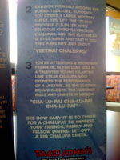

Chalupa Cheer
Posted April 17 2008 3:57PM by Michael
As a follow up to the earlier Taco John's story, I took a picture of the little signs that were sitting on all of the tables, as it had me chuckling after the first scenario. I'll type out the pictures below so you don't have to squint past the glare.
ARE YOU READY TO LET OUT A BIG CHALUPA CHEER?
Perhaps you've never cheered for a chalupa before. Don't worry -- it's really quite easy. The key to a good chalupa cheer is visualization
Try these scenarios:

Imagine your favorite baseball team. It's a tie game and they're batting in the bottom of the night, a pinch hitter comes to the plate. It's a hard-swinging seasoned beef chalupa. First pitch, it connects. It's going, going, gone!
WAY TO GO CHALUPA!"
Envision yourself digging for buried treasure. Suddenly, you strike a large wooden chest. You lift the lid and discover it's filled with delicious chipotle chicken chalupas. And the flatbread is still warm and tasy! You take a big bite and shout.
You're attending a Broadway premiere. In the lead role is a talented young cilantro lime steak chalupa who delivers the performance of a lifetime. As the curtain draws closed, the audience rises and chants in unison.
CHA-LU-PA!"
See how easy it is to cheer for a chalupa? So impress your friends, family and fellow diners. Let out a big chalupa cheer.
First of all, who thinks up these stories? Second of all, I don't think anything could compare to thousands of people chanting "CHA-LU-PA!" in unison. The image of that in my head is priceless.